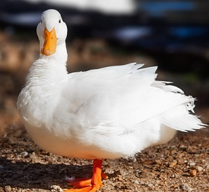

- 2025-2026 - BUT 1ère année :
IUT2 Grenoble
- Grenoble
- Isère
- 2023-2025 :
Lycée Polyvalent Vaucanson
- Grenoble
- Isère
- 2018-2022 :
Collège Jules Verne
- Grenoble
- Isère

18 ans
12 Impasse de la Noyeraie - 38760 Varces-Allières-et-Risset
+33 06 70 06 88 52
lysiane.blachon@gmail.com
Voici les langues que je pratique :
| Notions | Technique | Courant | |
|---|---|---|---|
| Anglais | - | - | X |
| Italien | - | X | X |
Danse 💃 / Gymnastique 🤸
Lecture 📚 / Ecriture d'un livre